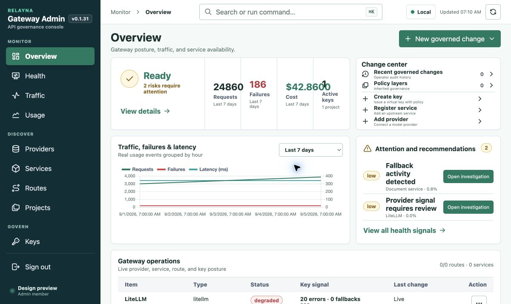
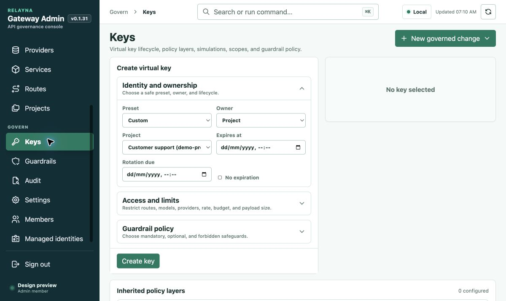
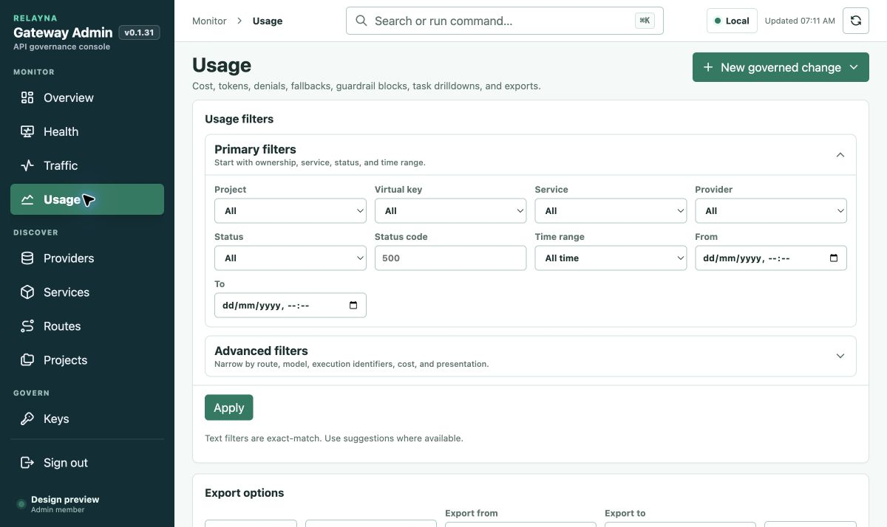
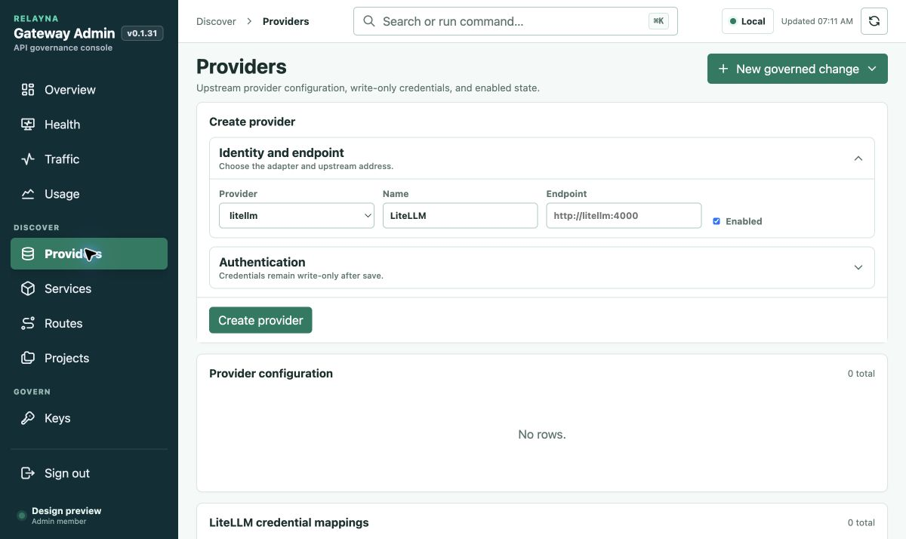
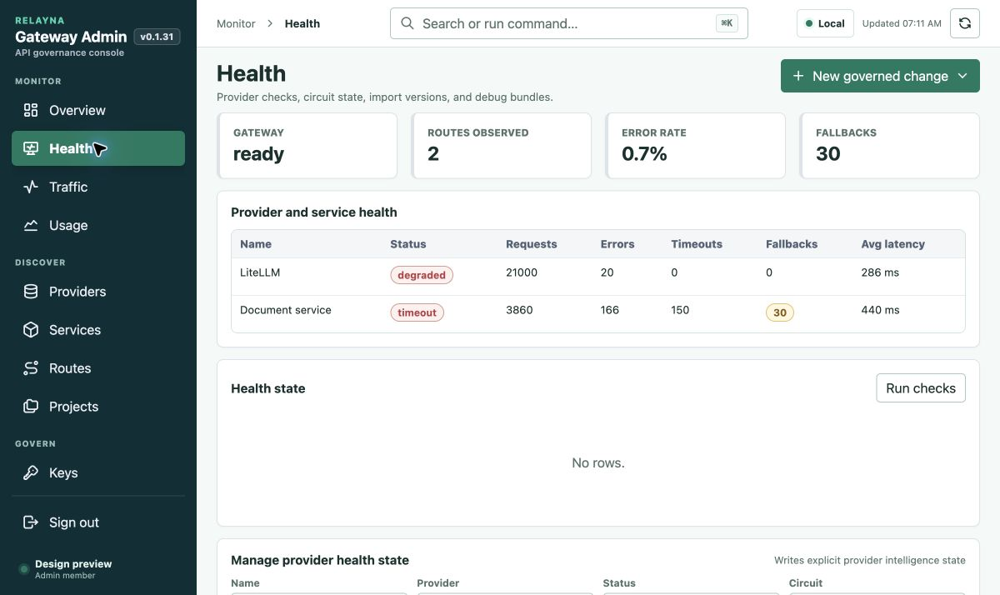
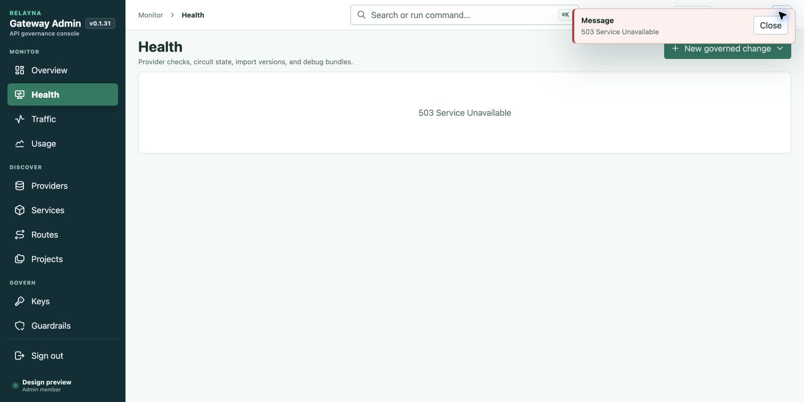
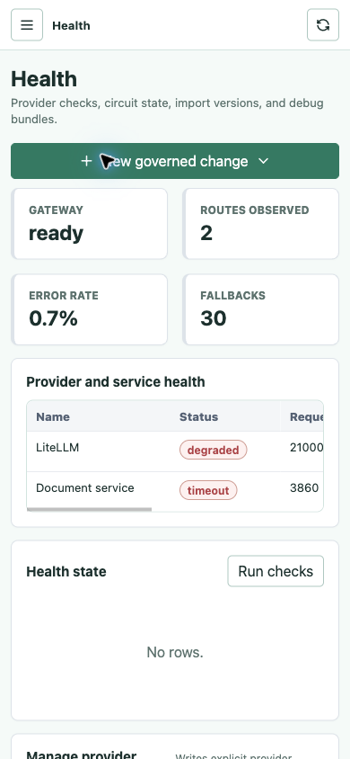

1 · Overview
Expired key counted active; crowded metrics
Unchanged application assets · Synthetic read-only data · Chrome review, 5 September 2026

Expired key counted active; crowded metrics

Creation and policy forms precede inventory

Filters occupy the first screen

Creation-first; weak empty-state guidance

Conflicting health concepts

503 removes monitoring information

Table scroll works; hierarchy needs work